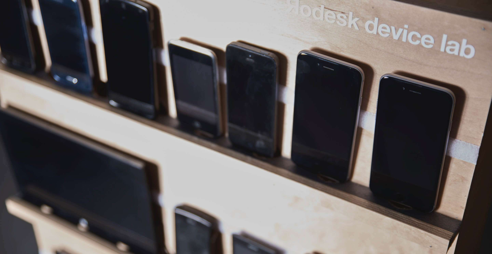
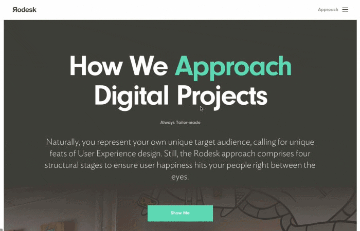

InVision, a web application that serves lovable functions.
Prototyping Is Equally Educational For Our Clients And For Ourselves
Sharing designs within teams as well as with customers, gathering direct feedback on your designs, and running prototypes across all sorts of devices. We simply love InVision for these functions. As a team, we have benefited hugely from our use of this tool, for reasons explained in this post.
InVision is a web application that is all about building prototypes. Since it is so easy to operate, creating realistic situations is no big deal. These situations then serve as test cases for our design decisions, towards our customers and users alike. This is really helpful in identifying and tackling any ambiguities or misunderstandings that might otherwise remain hidden until the end of the trajectory.

Prototype Of The New Website In InVision
Designs Are Available For Everyone In The Team
Rodesk comprises a lean multidisciplinary team based on close-knit collaboration. All members have their own tasks, but we develop the product in concert. This makes it crucial for everyone to have access to the designs. InVision largely abolishes the need to send file samples back and forth. Simply sharing a link through the slack programme suffices for all team members to return to the designs without having to install any software or fonts whatsoever.
Direct Communication On Your Designs
Gathering and receiving feedback is a major factor in any project. The way feedback is received often differs between customers, and it usually lacks structure, making it hard to figure out to which page or module they refer.
One of InVision’s main benefits is its option for placing comments on your designs in the web programme. After customers receive a link containing all your designs, they are free to place comments right next to the topics concerned. This enables us to respond right below their comments, while simultaneously showing us potential points of doubt for our customers and elements we intend to change.

Viewing a comment in InVision
Conclusion
Chances are that at least one of us will have inVision running at any time. It has become an indispensable tool for us. Its ability to centralise all information along with all collected feedback is a huge improvement over the usual chaos resulting from communicating across different platforms like e-mail, slack, and the like, because after all, a decrease in chaos nearly always results in increased product quality.


- Jonathan Reijneveld
- Journal /
Sketch Plugins That Will Make Your Life Easier
Sketch has become a important part of our workflow, for our designers as well as our coders.
Read more